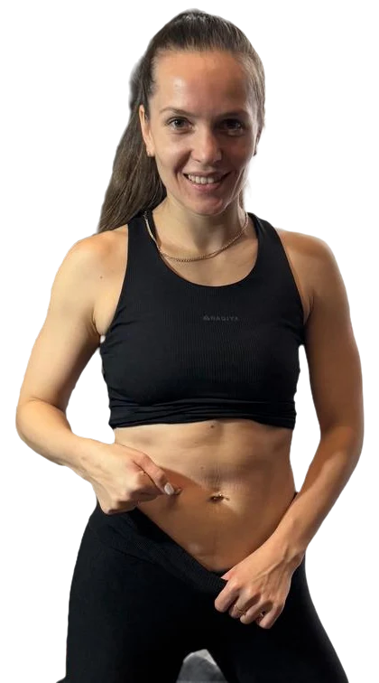

01 Старт
21день
«Лимфа-драйв»
599рублей
Базовая программа для восстановления после родов. Домашние тренировки без инвентаря и жестких диет.
- Мягкий вход в спорт без нагрузки на суставы
- Тайм-менеджмент для занятых мам
домашние тренировкивосстановление после родов

Инструктор АФКТренермама двоих
Тело мамы может быть красивым после вторых родов
Получить доступЯ Юлия, тренер и мама двоих детей. Похудела на 14 кг после родов. Помогаю мягко, но навсегда снизить вес, разгоняю лимфу и даю сумасшедшую мотивацию!
01 программы
Мягкое восстановление, разгон лимфы и мотивация для мам
01 Старт
21день
599рублей
Базовая программа для восстановления после родов. Домашние тренировки без инвентаря и жестких диет.
02 Прогресс
21день
599рублей
Углубленная программа с акцентом на лимфодренаж и укрепление глубоких мышц. Разгоняю лимфу.
03 Марафон
21день
599рублей
Марафон «Жиросжигание» — 21 день. Это не про голод и изнурение. Это про режим, движение и результат без вреда для суставов.
Что внутри
04 Индивидуально
1 500рублей
Разбор ситуации, определение целей и составление индивидуального плана тренировок для дома.
02 обратная связь
Похудела на 8 кг за 3 недели!
Тренировки дома с ребенком — это гениально. Спасибо Юле за поддержку!
Наконец-то ушла отечность!
Лимфодренаж работает отлично. Очень нравится подход без жестких диет.
После вторых родов тело казалось бесконечным.
Но 21 день изменили всё. Минус 12 кг и я счастлива!
Юля, ты мотивируешь на каждом шагу!
Даже когда хочется сдаться. Результат того стоит, я в форме!
Мягкий старт, быстрый результат.
Тренируюсь дома, пока дети спят. Идеально для мам!